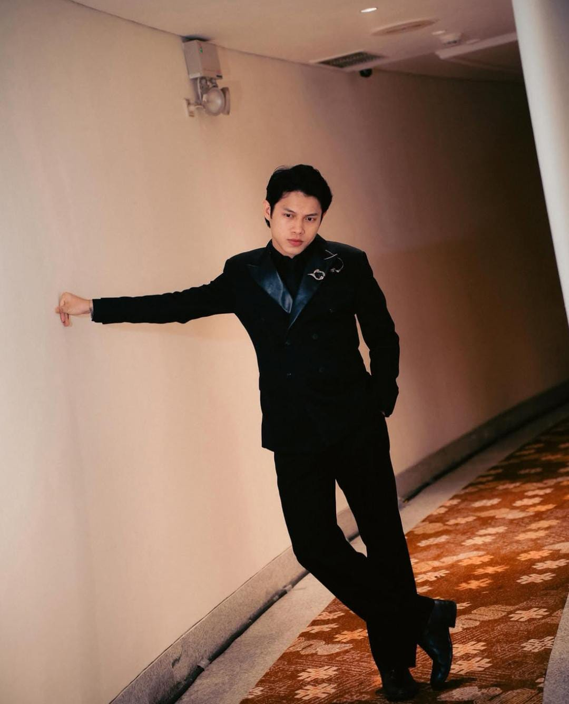

Perjalanan karier Rony mulai dikenal secara nasional saat mengikuti ajang Indonesian Idol musim ke-12 (2022–2023). Dengan karakter suara serak yang khas, teknik vokal yang kuat, dan penampilan yang energik, ia berhasil memikat perhatian para juri maupun penonton hingga berhasil meraih posisi ketiga. Meskipun tidak menjadi juara, ajang tersebut menjadi titik awal kesuksesannya di industri musik Indonesia.
Setelah menyelesaikan kompetisi, Rony resmi bergabung dengan Universal Music Indonesia dan merilis singel debut berjudul Mengapa pada tahun 2023. Kesuksesannya kemudian berlanjut melalui beberapa karya lain, seperti Angin Malam (2023), Sepinya Malam (2023), Cinta Karena Cinta (2024), yang merupakan lagu daur ulang milik Judika, serta Tak Ada Yang Sempurna (2024). Berkat konsistensinya dalam berkarya dan karakter vokalnya yang unik, Rony berhasil meraih berbagai nominasi dan penghargaan di ajang musik nasional.